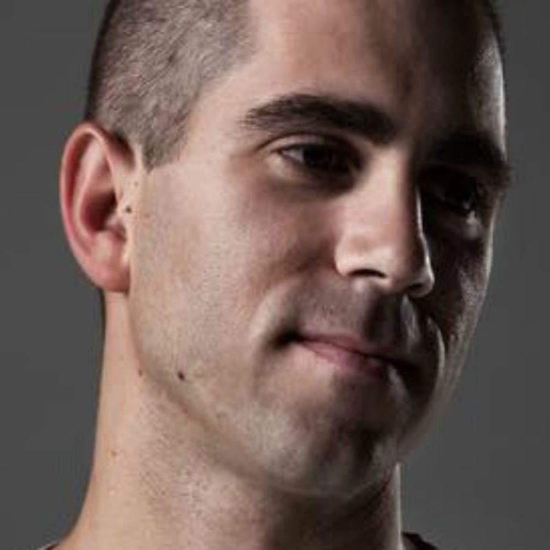

Giuseppe Ottaviani: As beautifully textured as they come


Is there anyone who has mastered the beauty of a richly-textured trance breakdown quite as effectively as Italy’s Giuseppe Ottaviani? Not a chance, as the former NU NRG member has crafted it down to a sumptuous artform. While many producers can often sound like they’re trying to recreate the same trance formula that’s been set in stone for the last decade, Giuseppe brings something fresh and gorgeous to the studio every single time.
He’s one of electronic music’s most accomplished producers, and similar to others like Australia’s own Jaytech who have a classically trained background, his sound is so beautifully textured, the interlocking layers weaved together so finely, that it’s like he’s working with a synthesized orchestra. “I have a classical music education, and I’ve studied for many years, so it obviously helps me in producing my music,” Giuseppe told ITM. “Basically it’s all about melody for me, so when I start a new idea, kick and bass is never the first sound to work with, but melody. Then when I feel there is a good vibe on that, I can start to work on the rest.”
With his brand new album Go! on the horizon, out on Paul van Dyk’s record label Vandit, he’ll be offering support to fellow trance powerhouse Ferry Corsten this weekend across the country. ITM’s Angus Paterson chats to Giuseppe about his music, his new album and what we can expect from his upcoming live performances.
It’s been just under a year since you were last in Australia. How have things been going for you over the last 12 months?
I’ve been busy working in the studio for my first solo artist album GO!. I had to work really hard to finish all tracks on time, because I was always busy touring with my show all around the world. So I had not that much time to work in the studio. But finally after 12 months the album is now ready to go!
I’ve lucky enough to have a listen to Go!, and I think it’s easily the best trance album I’ve heard this year (and that’s in a year where there’s been quite a few trance albums). How do you feel about it personally now it’s completed?
I think it contains the kind of music, which definitely best represents myself better than anything else since the start of the NU NRG project. Also for those people who are a little bit into the typical Giuseppe Ottaviani sound, they will be surprised by what they will find on the album.
Tell us a bit about your journey in getting it completed. Did you have a vision for it from the outset?
I didn’t have a complete vision for the whole album, but I had and have a clear idea of my sound. Actually I wanted to make a wide range of music to show to the people. That was my vision of the album in general. In fact, you can find some trance tracks, some techno-techy tracks and some vocal tracks on the album as well. It is just the music that I like the most and that touches me. I’ve been known as a trance producer, but even if I mainly produce trance, you will not only find trance music on my album.
Tracks like One Day show you experimenting with your sound; there’s almost like a “U2 meets Giuseppe” vibe going on there. Where you encouraged to try a few new things on the album?
Well, I have to admit that there is a “U2-ish” feeling on that, but that’s just because they are my favorite rock band. And I there is no way they do not influence me. Besides that it’s an example of how I’m not just into the trance music.
Your album is coming out on the Vandit label, and your professional relationship with Paul van Dyk is obviously a very important one. What did you do to get so much on his good side?
Honestly I don’t know if that is something special or not. But for sure I do my best to produce my music as good as possible. And this is what I’m doing even right now.
Your album is coming out on Vandit, and your professional relationship with Paul van Dyk is obviously a very important one. Paul has said many times that his aim with Vandit is to support musical talent, and he points to you as one of its most important recruits. How important has this support been for your career?
Meeting Paul van Dyk has been fundamental for my career. I do my best to produce my music as good as possible, and I would like to to thank him and all guys at the Vandit office for their help and support. Is that answering your question?
The euphoria of trance, and the beauty of a melodic breakdown and buildup, is something that so many producers have tried to capture over the past decade, often with generic results. But you seem to have nailed it, as your work always seems fresh. Were does the success of your approach come from?
There is not a secret weapon, I guess, but just the passion that I put into my productions. Usually I’m inspired from everything that happens in my life, and each single track I make is a piece of my life and connected to a specific experience. Each track gives me a particular emotion, and the reason why I’m here in the scene is just to share all these emotions with other people. Simple as that.
Both No More Alone and Changing Ways have some of the most exhilarating buildups heard in a trance for quite a long time. There’s a technique where it’s like you’re raising the stakes gradually, layering each element bit by bit. Structurally, what’s going on here?
The first idea comes from a melody but sometimes, I feel that only a good melody isn’t enough. And that’s why I wanted to introduce some vocals into it. I’m not a songwriter at all, but I wanted to make the lyrics of No More Alone myself. Just, because they needed to reflect a specific part of my life. I fortunately found Stephen Pickup with his great voice who completed the job. Same thing for Changing Ways, even if this time lyrics didn’t apply to me. Again I wanted to use a male voice since I find it more appropriate than a female one. And when Francesco M finished to sing in the break down and the kick comes in, it is really uplifting I think.
Finally, you’ll be here shortly to support Ferry Corsten in Australia on his ‘Once in a Blue Moon: The Experience’ tour. Have you played with him many times before?
Yes, I’ve played with him many times in the past and it’s always been a great pleasure to meet Ferry. But above all, it’ll be an absolute great pleasure to meet the Australian crowd again. I just love them.
And what can we expect from your performances?
You can expect a special live show with all my new tracks from the new album and some new music as well, in order to celebrate the first tour after the album release.
Giuseppe Ottaviani’s Go! is out on 19th September through 405 Recordings and Stomp, catch him supporting Ferry Corsten this weekend:
Thu Sep 10 – Brisbane, Family
Fri Sep 11 – Melbourne, Palace Metro Theatre
Sat Sep 12 – Sydney, Hordern Pavilion